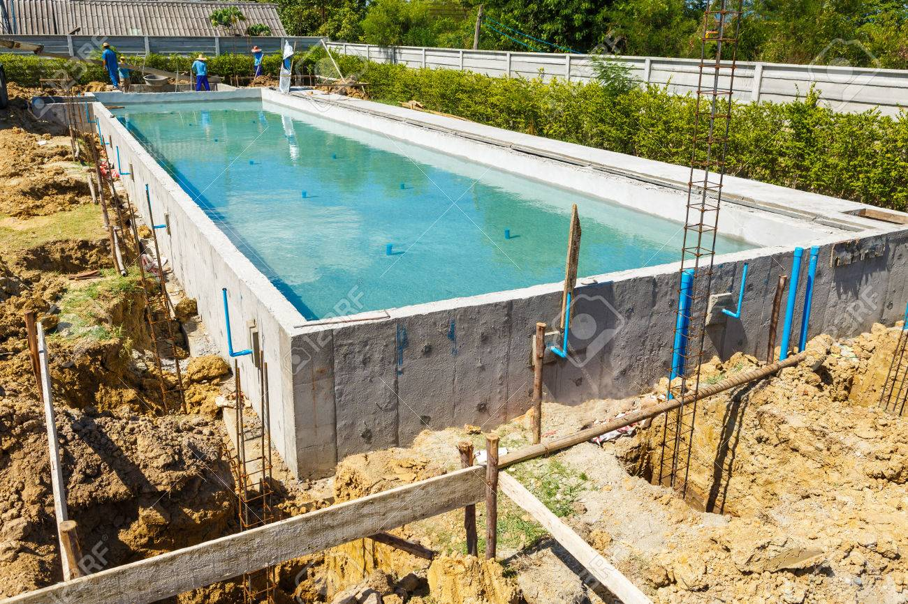
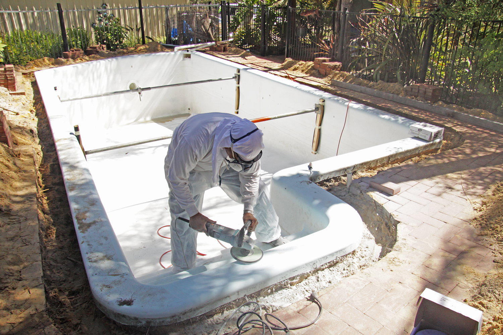
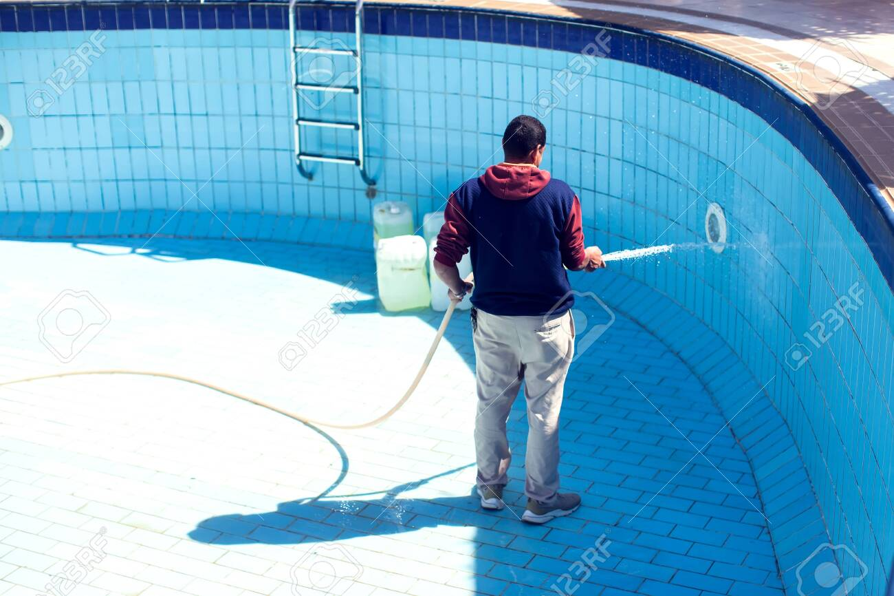

🏗️ Construction de piscines
De la conception à la mise en eau, je réalise votre piscine sur mesure selon vos envies et votre terrain à Cajarc et dans le Lot.
Choisissez vos matériaux, vos équipements et le style qui vous correspond : piscine traditionnelle, à débordement ou semi-enterrée. Devis gratuit et accompagnement personnalisé.

🔧 Rénovation & modernisation
Votre piscine montre des signes d'usure ? Je rénove votre bassin : remplacement du liner, réparation d'étanchéité, modernisation du système de filtration.
J'installe également des équipements économiques pour réduire votre consommation d'énergie. Intervention rapide dans le Lot (46).

🧹 Entretien & dépannage
Contrats d'entretien, analyse de l'eau, nettoyage complet, hivernage et remise en service : tout pour garder une eau cristalline et une installation durable.
En cas de panne, j'interviens rapidement à Cajarc et dans tout le Lot pour diagnostiquer et réparer votre piscine.